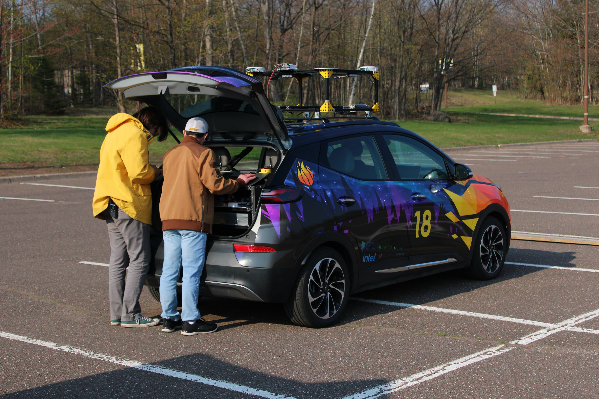

1 / 3

Bolt Under the Northern Lights
2 / 3

Vehicle Testing During the Month Before Competition
3 / 3

Vehicle GNSS Calibration at Competition
The AutoDrive II Challenge is a GM and SAE sponsored event in which universities receive a stock Chevy EUV Bolt and make it autonomous over 5 years. This edition of the challenge began in 2021 and will be ending in June 2026. Scored challenges progressively get harder as each year passes with topics including base-level object detection and vehicle control, while later spanning to non-gps-based localization and multi-stop trips. Teams then meet in June of each year to compete at University of Michigan's test track, M-City, to compete in the year's given challenges. To see more about the AutoDrive Challenge, please visit the link below.
In my time on AutoDrive, most of my work has been within the perception team and any of the tasks that we had set.
I originally started on the project in my sophomore year, and barely knew how to code in C++ let along even knowing how to use ROS, LiDAR, or remotely understand what I was getting into.
I began with basic euclidean clustering and plane ground filtering as a starting ground.
Although I'm not proud of the code me and my fellow members put together, we were able to at least remove the ground plane and output some bounding boxes of objects in our surround environment.
As it is now I would love to go back with my current knowledge and rewrite the whole lidar processing node to perform better than it currently is.
In my second year, I originally started out on that process but got pulled into working for the Mapping and Planning Team due to a friend being swamped with writting two subsystems for the vehicle on their own.
Now in my third year, I'm the one writing a whole subsystem on my own... yippee.
Which is actually really cool but definitely a huge task.
More specifics will be added in my Localization section as that is my holy grail of AutoDrive and my biggest accomplishment up to this point.
It's not the best code but its definitely better than what I used to do.
As stated in my perception section, I was pulled into the Mapping and Planning team to help out a friend who was swamped with trying to write the path planner and behavioral subsystems.